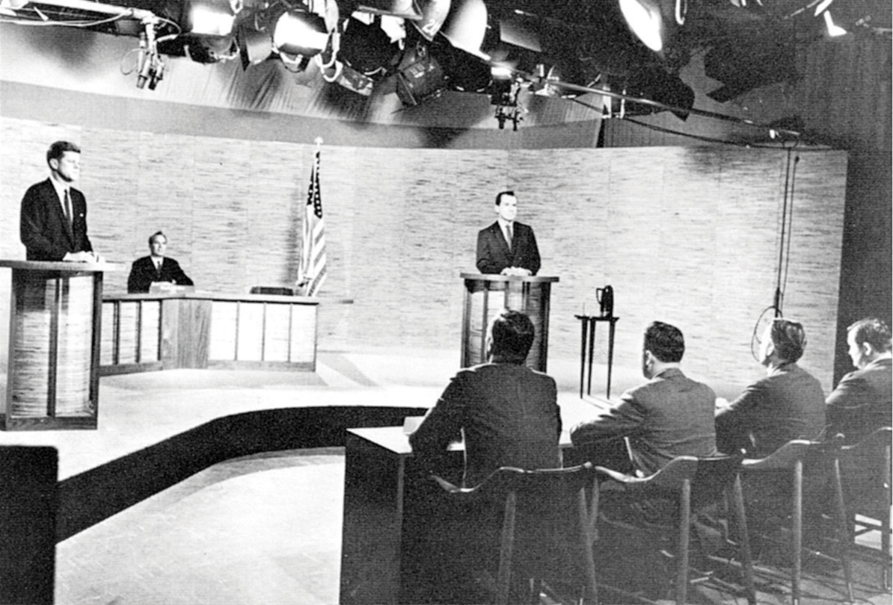
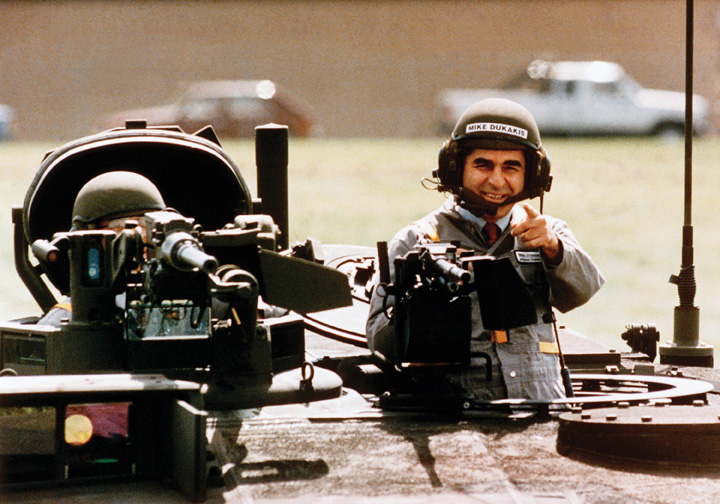
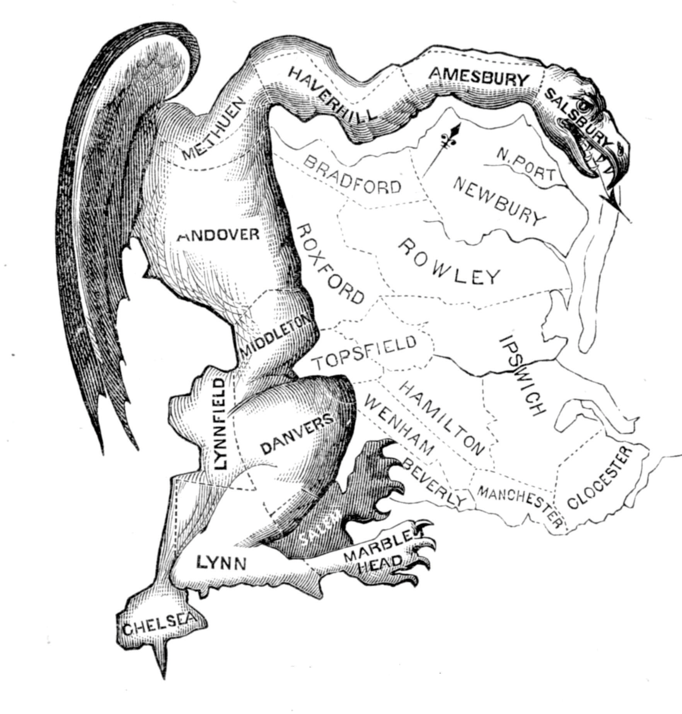

It has become commonplace for reality programs to hold elections. The American Idol winner is chosen in an elimination contest by receiving the most votes from viewers who, just like voters in regular elections, make decisions based on any number of reasons: voice, song selections, looks, gender, race, even hometown. True, in American Idol, people vote as often as they want by telephone and text message. On Dancing with the Stars, a voting controversy was set off when Bristol Palin survived poor performances and unfavorable ratings from the judges because partisan supporters of her mother, former Republican Alaska governor Sarah Palin, allegedly stuffed the electronic ballot box. Multiple voting, although illegal, has not been unknown in American elections; and distance voting may be a way of the future, freeing voters from traveling to the polling booth.
Relatedly, focus groups bring together a few people representative of the general public or of particular groups, such as undecided voters, to find out their reactions to such things as the candidate’s stump speech delivered at campaign rallies, debate performance, and campaign ads.
“Money is the mother’s milk of politics,” observed the longtime and powerful California politician Jesse Unruh. The cost of organizing and running campaigns has risen precipitously. The 2008 presidential and congressional elections cost $5.3 billion dollars, a 25 percent increase over 2004.Brody Mullins, “Cost of 2008 Election Cycle: $5.3 Billion,” Wall Street Journal, October 23, 2008. Around 60 percent of this money goes for media costs, especially television advertising. The Campaign Finance Institute has a wealth of information about funding of American election campaigns.
In an episode of The Simpsons, Homer’s boss tells him, “Do you realize how much it costs to run for office? More than any honest man could afford.”“Two Cars in Every Garage, Three Eyes on Every Fish,” The Simpsons, November 1990. Spurred by media criticisms and embarrassed by news stories of fund-raising scandals, Congress periodically passes, and the president signs, laws to regulate money in federal elections.
The Federal Election Campaign Act (FECA)A federal law originally passed in 1971 that limited the amount of money that individuals, political parties, and political groups could contribute to campaigns. of 1971, amended in 1974, limited the amount of money that individuals, political parties, and political groups could contribute to campaigns and provided guidelines for how campaign funds could be spent. The FECA also provided a system of public financing for presidential campaigns. It required that campaigns report their financial information to a newly established enforcement institution, the Federal Elections Commission (FEC)The institution that oversees campaign finance, including campaign contributions and candidate expenditures., which would make it public.
Opponents challenged the constitutionality of these laws in the federal courts, arguing that they restrict political expression.See Bradley A. Smith, Unfree Speech: The Folly of Campaign Finance Reform (Princeton, NJ: Princeton University Press, 2001); and John Samples, The Fallacy of Campaign Finance Reform (Chicago: University of Chicago Press, 2006). In the 1976 case of Buckley v. Valeo, the Supreme Court upheld the limits on contributions and the reporting requirement but overturned all limits on campaign spending except for candidates who accept public funding for presidential election campaigns.Buckley v. Valeo, 424 US 1 (1976). The Supreme Court argued that campaign spending was the equivalent of free speech, so it should not be constrained.
This situation lasted for around twenty years. “Hard money”Funds, contributed directly to candidate campaigns, that are subject to government regulation. that was contributed directly to campaigns was regulated through the FECA. However, campaign advisors were able to exploit the fact that “soft money”Funds contributed to political parties for get-out-the-vote drives, party-building activities, and issue advertising that was not subject to contribution or expenditure limitations as long as it was not used directly for candidate advertising. given to the political parties for get-out-the-vote drives, party-building activities, and issue advertising was not subject to contribution limits. Soft money could be spent for political advertising as long as the ads did not ask viewers to vote for or against specific candidates. Nonparty organizations, such as interest groups, also could run issue ads as long as they were independent of candidate campaigns. The Democratic and Republican parties raised more than $262 million in soft money in 1996, much of which was spent on advertising that came close to violating the law.Dan Froomkin, “Special Report: Campaign Finance: Overview Part 4, Soft Money—A Look at the Loopholes,” Washington Post, September 4, 1998.
Figure 11.3 Republican National Committee Ad Featuring Presidential Candidate Bob Dole
The Republican National Committee used “soft money” to produce an ad that devoted fifty-six seconds to presidential candidate Bob Dole’s biography and only four seconds to issues. Similarly, the Democratic National Committee used “soft money” on ads that promoted candidate Bill Clinton. These ads pushed the limits of campaign finance laws, prompting a call for reform.
Source: Photo courtesy of the US Department of Defense by Samantha Quigley, http://commons.wikimedia.org/wiki/File:Bob_Dole_VE_Day_60th_Anniversery.jpg.
Congress responded with the Bipartisan Campaign Reform Act (BCRA)Also known as McCain-Feingold, this federal law placed limitations on soft-money contributions by political committees and prohibited corporations and labor unions from advocating for or against a candidate via broadcast, cable or satellite prior to presidential primaries and the general election. of 2002, better known by the names of its sponsoring senators as McCain-Feingold. It banned soft-money contributions by political committees and prohibited corporations and labor unions from advocating for or against a candidate via broadcast, cable, or satellite prior to presidential primaries and the general election. A constitutional challenge to the law was mounted by Senate Majority Whip Mitch McConnell, who believed that the ban on advertising violated First Amendment free-speech rights. The law was upheld by a vote of 5–4 by the Supreme Court.McConnell v. Federal Election Commission, 540 US 93 (2003). This decision was overruled in 2010 when the Supreme Court ruled that restricting independent spending by corporations in elections violated free speech.Citizens United v. Federal Election Commission, 130 S.Ct. 876 (2010). The case concerned the rights of Citizens United, a conservative political group, to run a caustic ninety-minute film, Hillary: The Movie, on cable television to challenge Democratic candidate Hillary Rodham Clinton as she ran in the 2008 primary election campaign. The 5–4 decision divided the Supreme Court, as justices weighed the interests of large corporations against the Constitutional guarantee of free speech.Adam Liptak, “Justices 5–4, Reject Corporate Spending Limit,” New York Times, January 21, 2010.
In April 2011 comedic news anchor Stephen Colbert announced his intention to form a “super PAC” to expose loopholes in the campaign finance laws that allow corporations to form political actions committees, which can spend unlimited amounts of money in elections on advertising. Colbert testified in front of the FEC and was granted permission to form his PAC, which would be funded by Viacom, the media corporation that owns Comedy Central, which hosts The Colbert Report. The decision sparked concern that media organizations would be free to spend unlimited amounts of money in campaigns; however, the FEC’s decision imposed the strict limitation that Colbert could only show the ads on his program. Colbert announced the FEC’s decision to allow him to form a PAC to raise and spend funds in the 2012 election in this video: http://www.colbertnation.com/the-colbert-report-videos/391146/june-30-2011/colbert-super-pac---i-can-haz-super-pac-.
There are six main sources of funding for federal elections. These sources include individuals, political action committees, public funding, candidates’ contributions to their own campaigns, political party committees, and advocacy organizations or “527 committees.” Individuals contribute the most to election campaigns. Individual donations amounted to $1,330,861,724Campaign finance data for the 2008 campaign are available at the Federal Election Commission, “Presidential Campaign Finance: Contributions to All Candidates by State,” http://www.fec.gov/DisclosureSearch/mapApp.do. for the 2008 presidential election cycle. People can give up to $2,300 to candidates for each primary, runoff, and general election; $28,500 annually to national political parties and $10,000 to each state party; $2,300 to a legal compliance fund; and as much as they want to a political action committee (PAC)Funds associated with business or labor organizations or with politicians and created in order to finance candidates’ campaigns. and advocacy organizations. PACs were developed by business and labor to fund candidates. Politicians have also created PACs. They can give up to $5,000 per candidate per election. In 2008, they gave the second-largest amount: $5,221,500.
Presidential candidates can opt for public funding of their election campaigns. The funds come from an income tax check-off, where people can check a box to contribute $3 to a public funding account. To qualify for public funding, candidates must have raised $100,000 in amounts of $250 or less, with at least $5,000 from each of twenty states. The first $250 of every individual contribution is matched with public funds starting January 1 of the election year. However, candidates who take public funds must adhere to spending limits.
Figure 11.4 Presidential Candidate John McCain on the Campaign Trail in 2008

In 2008, Republican candidate John McCain criticized his Democratic opponent, Barack Obama, for failing to use public financing for his presidential bid, as he had promised. McCain felt disadvantaged by taking public funds because the law limits the amount of money he could raise and spend, while Obama was not subject to these restrictions.
Source: Photo courtesy of Matthew Reichbach, http://commons.wikimedia.org/wiki/File:Sarah_Palin_and_John_McCain_in_Albuquerque.jpg.
Party committees at the national, state, and local level, as well as the parties’ Senate and House campaign committees, can give a Senate candidate a total of $35,000 for the primary and then general election and $5,000 to each House candidate. There is no limit on how much of their own money candidates can spend on their campaigns. Neither John McCain nor Barack Obama used personal funds for their own campaigns in 2008. Self-financed presidential candidates do not receive public funds.
Known as “527 committees”Advocacy groups that can receive and spend unlimited amounts of money in elections as long as they do not coordinate with candidates’ campaign organizations or political parties in support of or opposition to a candidate. after the Internal Revenue Service regulation authorizing them, advocacy groups, such as the pro-Democratic MoveOn.org and the pro-Republican Progress for America, can receive and spend unlimited amounts of money in federal elections as long as they do not coordinate with the candidates or parties they support and do not advocate the election or defeat of a candidate. They spent approximately $400 million in all races in the 2008 election cycle. In the wake of the Supreme Court decision supporting the rights of Citizens United to air Hillary: The Movie, spending by independent committees grew tremendously. The 527 committees spent $280 million in 2010, an increase of 130 percent from 2008.Campaign Finance Institute, “Non-Party Spending Doubled in 2010 But Did Not Dictate the Results” press release, November 5, 2010.
Most campaigns have a strategy to win an election by raising funds, recruiting volunteers, and gaining votes. Campaign strategies take into account voters’ party identification, the candidate’s image, and issues. Candidates carry out their strategy through retail politics and the media.
In retail politicsCampaign activity, also known as field operations, in which candidates engage in person-to-person encounters with potential voters., also known as field operations, candidates engage in person-to-person campaigning. They speak at rallies, visit voters in their homes, and put in appearances at schools, religious institutions, and senior-citizen centers. They greet workers outside factories and in eateries and hold town-hall meetings. The campaign distributes posters, lawn signs, T-shirts, baseball caps, and buttons.
If the campaign has sufficient funds, retail politics involves microtargetingUse of computers and mathematical models to identify people’s vote preferences based on a variety of factors ranging from their partisan preferences to their purchasing history., using computers and mathematical models to identify people’s vote preferences on the bases of the magazines they read, credit card purchases, and the cars they own.Leslie Wayne, “Democrats Take Page from Their Rival’s Playbook,” New York Times, October 31, 2008. This information is used to woo undecided voters and ensure that supporters are registered and cast their ballot. Microtargeting has become more common and efficient in the information age.
Candidates have a base of support, usually from people who are registered with and consistently vote for the candidate’s party. For a candidate whose party has a majority of the people registered to vote in an electoral district, all it takes to win the election is getting enough of them out to vote. This may be easier said than done.
Party identificationA person’s affiliation with a political party that can be a strong predictor of his vote choice in an election. seldom decides elections alone, although it is a strong predictor of a person’s vote choice. A candidate’s image and her position on issues are also important, particularly when independents and undecided voters hold the balance. It does not apply in a primary when all the candidates are of the same party.
Candidate imageThose aspects of a candidate’s background, experience, and personal qualities that are presented to the public in order to influence people’s voting decisions. consists of the background, experiences, and personal qualities of people running for elected office. Campaigns strive to present an image of their candidate that fits the public’s expectations of the office sought, especially in comparison with the opponent, who is portrayed as less qualified. Voters expect the president to have leadership skills and to be principled, decisive, and honest. Other qualities, such as military service and compassion, may be deemed by the public and the media to be important as well.
Figure 11.5 George W. Bush and Al Gore in the 2000 Presidential Election
The media’s depictions of presidential candidates Republican George W. Bush and Democrat Al Gore during the 2000 presidential election influenced public perceptions. Bush was depicted as being unintelligent by news organizations that compiled lists of his gaffes and malapropisms. Gore was construed as being dishonest for allegedly claiming that he invented the Internet.
Source: Photo (left) courtesy of the White House by Eric Draper, http://commons.wikimedia.org/wiki/File:George-W-Bush.jpeg. Photo (right) courtesy of the World Resources Institute Staff, http://commons.wikimedia.org/wiki/File:Al_Gore.jpg.
Images are not entirely malleable. Age, gender, race, and military service cannot be changed willy-nilly. But they can be manipulated by selective accounting and shrewd presentation of the facts. Images are easiest to create early in a campaign when many people may not know much about a candidate. Which of a candidate’s possible images the public accepts often depends on the media’s depictions.
Issues, subjects, and public-policy positions on matters of concern are central to campaigns. Candidates take positions on issues that are designed to increase their chances of election. Issues raised during campaigns are often based on voters’ concerns that are identified by polls. The media can make issues a prominent part of the election agenda, which can work for or against a candidate.
Many candidates have past records indicating their stands on issues, leaving them little choice about how to manage some issues. Incumbents claim credit for their accomplishments. Challengers blame the incumbent for the country’s problems. Moreover, each party is associated with certain issues. Democrats are seen as the party to protect social security, improve the economy by creating jobs, increase the minimum wage, and expand health care coverage. Republicans are viewed as the party to strengthen national defense, cut taxes, and be tough on crime.
Wedge issuesIssues that cut across party lines and that can be used by candidates to attract voters who affiliate with the opposition party. are issues that cut across party lines. A candidate can increase her vote by splitting off some of the people who usually support the other party and its candidates.D. Sunshine Hillygus and Todd G. Shields, The Persuadable Voter: Wedge Issues in Presidential Campaigns (Princeton, NJ: Princeton University Press, 2008). Republicans have employed affirmative action as a wedge issue in order to siphon off from the Democrat’s base working-class white men who oppose it. Democrats have used abortion rights to appeal to some conservative Republican women.
Implementing strategy effectively requires staying on message. Candidates are like barkers at a fairground, each promoting his or her own show. At every opportunity they repeat their message, which is sometimes abbreviated into a slogan. In 1992 the main message of Bill Clinton’s presidential campaign was “It’s the economy, stupid,” which was aimed at blaming President George H. W. Bush for the country’s economic problems. Barack Obama’s campaign slogan in 2008, “Change we can believe in,” was a fresh take on a familiar call for change in American politics.
Figure 11.6 Barack Obama’s Campaign Slogan
Presidential candidate Barack Obama reinforced his campaign slogan, “Change we can believe in,” during his campaign trail appearances in 2008.
Source: Photo courtesy of Bbsrock, http://commons.wikimedia.org/wiki/File:ObamaAbingtonPA.JPG.
Staying on message is not easy. Campaigns constantly have to react to unexpected events and to the other side’s statements and actions—all in a twenty-four-hour news cycle. They usually respond rapidly to new subjects and issues, deflecting, reframing, or exploiting them.
Elections are crucial in a representative democracy like the United States. They enable people to choose their leaders and thereby influence public policy. They endow elected officials with legitimacy. There are two main types of elections: primary and general elections. Candidates from the same political party contest for the party’s nomination in primary elections. Candidates from different parties run in the general election, which decides who will take office.
Campaign finance is an integral element of American elections. Individuals, PACs, public funds, political parties, candidates themselves, and 527 committees fund campaigns. Campaign finance laws have shaped the way that candidates raise and spend money in elections, especially presidential candidates who accept public funding.
Candidates engage in retail politics by meeting with voters on the campaign trail. Campaigns employ strategies that take into account party identification, candidate image, issues, and message cohesion.
After reading this section, you should be able to answer the following questions:
Campaigns want to influence media coverage in their candidate’s favor. They seek to dominate the election agenda, frame and prime issues, and have the media transmit their message of the day. The proliferation and diversity of modes of communication makes this complicated. Campaigns attempt to control their political advertisements and influence debates. They try to set the news-media agenda, but the relationship is uncertain at best.For an award-winning study of media in the 1992 presidential election, see Marion R. Just, Ann N. Crigler, Dean E. Alger, Timothy E. Cook, Montague Kern, and Darrell M. West, Crosstalk: Citizens, Candidates, and the Media in a Presidential Campaign (Chicago: University of Chicago Press, 1996).
Television and radio advertisements are essential elements of election campaigns.See Edwin Diamond and Stephen Bates, The Spot (Cambridge, MA: MIT Press, 1992); and Kathleen Hall Jamieson, Packaging the Presidency, 3rd ed. (New York: Oxford University Press, 1996). Ads capitalize on people’s beliefs and values. They are often designed to arouse emotions, such as anxiety and fear, hope and enthusiasm.Ted Brader, Campaigning for Hearts and Minds (Chicago: University of Chicago Press, 2006). They attract attention with dramatic visuals, sounds, and slogans. They sometimes exaggerate, even distort, information.
Candidate advertising in the information age has become more complex as campaigns seek to disseminate their ads through multiple platforms. Candidates release ads on candidate and political-party websites and on video-sharing platforms, such as YouTube and Hulu. Ads also are posted or linked on news sites and blogs.
Ads come in many formats, but even now when glitzy techniques are available, the talking head, in which the candidate speaks directly to the audience, is common. Other formats are testimonials from people enthusiastically supporting the candidate and documentary ads utilizing footage of the candidate campaigning. Ads that utilize a “self-incrimination” of the opponent can be devastating. In 1992, the Clinton campaign ran an effective ad juxtaposing President George H. W. Bush’s positive comments about the economy with data showing its decline.
Ads can use a panoply of visual and sound techniques. Distance (tight close-ups can be unflattering), angles (camera shots that look up make an individual seem more powerful), movement (slow motion suggests criminality), editing (people looking at a candidate with adoration or disgust)—all these techniques influence viewers’ reactions. Color also influences perceptions: blue reassures, red threatens. Candidates often are shown in flattering color while the opponent is depicted in sinister black and white. Morphing, electronically changing and blending photographs and other visuals, can identify candidates with unpopular figures, such as Adolf Hitler.
Attack adsCampaign ads that disparage the opposing candidate’s qualifications, character, image, record, and issue positions. denounce elements of the opponent’s record, image, and issue positions.For a discussion of how candidates go negative as circumstances warrant or allow, see Emmett H. Buell Jr. and Lee Sigelman, Attack Politics: Negativity in Presidential Campaigns since 1960 (Lawrence: University Press of Kansas, 2008). They have been criticized as “the crack cocaine of politics” and for being demeaning and misleading. They also have been praised as “political multivitamins,” providing voters with pertinent and substantial evidence-backed information about policies they would otherwise not encounter. Attack ads can allow voters to contrast candidate’s qualifications and issue stance.See Michael M. Franz, Paul B. Freedman, Kenneth M. Goldstein, and Travis N. Ridout, Campaign Advertising and American Democracy (Philadelphia, PA: Temple University Press, 2008); and John G. Geer, In Defense of Negativity: Attack Ads in Presidential Campaigns (Chicago: University of Chicago Press, 2006). “Multivitamin” quote is from Michael M. Franz, Paul B. Freedman, Kenneth M. Goldstein, and Travis N. Ridout, Campaign Advertising and American Democracy (Philadelphia: Temple University Press, 2008), 143 and “crack” quote by Senator Tom Daschle is from John G. Geer, In Defense of Negativity: Attack Ads in Presidential Campaigns (Chicago: University of Chicago Press, 2006), 1. They can mark memorable moments in campaigns, such as the “Daisy AdA famous ad, produced by Democratic presidential candidate Lyndon Johnson’ s campaign against Republican Barry Goldwater in 1964, that appealed to voters’ fear of a nuclear attack.” attacking Republican presidential candidate Senator Barry Goldwater in 1964.
Attack ads employ a number of techniques to convey their points. They can point out “flip-flops,” exposing apparent contradictions in the opponent’s voting record and public statements. They can chastise the opponent for “not being on the job” and missing votes. Ads can convey “guilt by association,” linking the opponent to unpopular individuals and organizations. Candidates can attempt to refute attack ads with denials, explanations, rebuttals, and apologies. However, many attack ads are effective in generating negative impressions of candidates. Rebuttals tend to repeat the original charge and prolong the ad’s visibility.Michael Pfau and Henry C. Kenski, Attack Politics (New York: Praeger, 1990), 53. The Wisconsin Advertising Project provides information and research about candidate, political-party, and interest-group advertising.
The Daisy Ad
The Daisy ad, an enduring attack ad, was designed for the 1964 election campaign of Democratic president Lyndon Johnson. It exploited the fear that Johnson’s Republican opponent, Senator Barry M. Goldwater of Arizona, was willing to use nuclear weapons.
The ad shows a little girl plucking the petals from a daisy as she counts down out of order from ten. A doomsday-sounding male voice takes over the countdown. At zero, there is a nuclear explosion, and the girl’s face turns into a mushroom cloud that fills the screen.
Over the roar of the cloud, President Johnson intones, “These are the stakes. To make a world in which all of God’s children can live, or to go into the dark.” The word stakes, with its suggestion of being burnt at the stake, fits the Johnson campaign slogan, which ends the ad: “Vote for President Johnson on November 3. The stakes are too high for you to stay home.”
The ad, which only ran once on television, never mentions Goldwater’s name. It was not necessary. People were soon informed by the news media that it referred to him. Outraged Republican leaders unintentionally publicized the ad, which only was aired once by the Johnson campaign. The news media replayed the ad, increasing its visibility and the negative effect it had on the Goldwater candidacy.
View the ad in its entirety at http://www.livingroomcandidate.org/commercials/1964/peace-little-girl-daisy.
The Daisy Ad
(click to see video)The classic attack ad from President Lyndon Johnson’s 1964 campaign in which it is implied that Republican challenger Senator Barry Goldwater, whose name is never mentioned, is prepared to use nuclear weapons. The Daisy ad ran only once on television, but it gained tremendous notoriety through media coverage that proved detrimental to Goldwater.
Political Advertising Archives
The Living Room Candidate at http://www.livingroomcandidate.org is a rich archive of campaign advertising dating back to the 1952 presidential election.
The Wisconsin Advertising Project at http://wiscadproject.wisc.edu provides data and research on ads in addition to copies of historic ads.
Some newspapers, a few television stations, and websites, such as FactCheck.org, analyze ads and point out their inaccuracies. These ad watchesMedia and academic efforts to analyze campaign ads and point out their inaccuracies. may limit the deceptiveness of ads in an election. But they may boomerang by showing the ads to people who might not otherwise have seen them.
Toward the end of a campaign, ad checks have trouble standing out amid the clutter of so many ads for so many candidates. People also can ignore them, skip over them with remotes, and delete them with a keyboard stroke.
Ensuring Accuracy
FactCheck.org is a project of the Annenberg Public Policy Center, which checks ads and news stories for inaccuracies on a continuing basis.
Learn more about FactCheck.org at http://www.FactCheck.org.
DebatesFormal meetings between candidates running for office, typically moderated by an impartial party, that allow candidates discuss issues and policy positions. between candidates running for office have become a campaign ritual. They allow voters to assess how candidates respond to questions and think on their feet. Debates also provide an opportunity for voters to directly compare candidates’ stands on issues. While television is the most popular medium, voters can tune into debates via a wide range of platforms, including radio and Internet sites. YouTube debates have been held where candidates answer questions that are submitted on video by average citizens.
Candidates seek to influence their debates by negotiating with the sponsoring organization and their opponents.On debates, see Alan Schroeder, Presidential Debates: Fifty Years of High-Risk TV, 2nd ed. (New York: Columbia University Press, 2008); and Newton N. Minow and Craig L. LaMay, Inside the Presidential Debates: Their Improbable Past and Promising Future (Chicago: University of Chicago Press, 2008). They negotiate over who will participate, the number and timing of debates, the subjects that will be addressed, and who will be the moderators and questioners. No detail is left out, including whether questions can be followed-up, the type of audience involvement, the length of answers, the height of the podia behind which the candidates will stand, whether and how much the candidates can move about the stage, and whether the camera can cut away from the speaker to an opponent.
Figure 11.7 The Televised Kennedy-Nixon Debate
Vice President Richard Nixon, confident about his debating skills, underestimated the importance of appearance. He was wan and sweating in contrast to his assured opponent, Senator John F. Kennedy, during the first televised debate of the 1960 presidential election.
Source: Photo courtesy of the National Parks Service, http://commons.wikimedia.org/wiki/File:Kennedy_Nixon_Debat_%281960%29.jpg.
In the first-ever televised presidential debate, the Kennedy-Nixon debateThe first-ever televised presidential debate between Vice President Richard Nixon and Senator John F. Kennedy in 1960. in 1960, the camera cut away to show Vice President Richard Nixon, who was recovering from the flu and wearing heavy pancake makeup, sweating while his opponent, Senator John F. Kennedy (D-MA), coolly answered questions. Viewers who saw the debate on television declared Kennedy the debate winner. However, people who listened to the debate on radio were turned off by Kennedy’s heavy Boston accent and felt that Nixon had won the debate.
1960 Kennedy-Nixon Debate (Part I) (1960)
Watch video of the Kennedy-Nixon Debate, 1960 at http://www.archive.org/details/1960_kennedy-nixon_1.
Candidates are coached for debates. They prepare answers to anticipated questions that can be designed to catch them off guard, which might result in a gaffe. They memorize words and phrases from their campaign strategists that have been tested in focus groups and polls. They try to project leadership, appear likeable and sincere, stay on message, emphasize issues that favor them, be critical of, but not nasty toward, their opponent, and avoid gaffes.
Clinton vs. Bush in 1992 Debate
(click to see video)President Bush checks his watch during a presidential debate in 1992.
Figure 11.8 George H. W. Bush at a 1992 Town Hall Debate

Small things can loom large in a debate: President Bush checking his watch was seen by some reporters and viewers as his lack of interest in the debate, a hope that it would soon end, and a sign of his struggling candidacy in 1992.
Source: Used with permission from AP Photo/stf/Ron Edmonds.
The campaigns spin the media before and after the debates. Predebate, they lower expectations about the debating skill of the candidate and raise them for the opponent. Campaign supporters try to convince journalists that their candidate won the debate. This spin is essential because journalists’ judgments, more than the substance of the debate, influence public opinion.Diana Owen, “The Debate Challenge,” in Presidential Campaign Discourse, ed. Kathleen E. Kendall (Albany: State University of New York Press, 1995), 135–55. Journalists and pundits, in their instant analysis and polls of viewers, frame debates in terms of who won or lost. They focus on “defining moments,” identifying memorable lines and gaffes. In his debate with Jimmy Carter in 1976, President Gerald Ford, trying to make a statement about the spirit of the East Europeans, said that the Soviet Union did not dominate Eastern Europe. Although people watching the debate registered little reaction, reporters picked up on this apparent blunder and hounded Ford for days. Public opinion swung from seeing the debate as essentially a tie to seeing it as a crippling loss for Ford.
The speed of the twenty-four-hour news cycle and the range of media outlets make it difficult for campaigns to control what the news media report. Still, they try to stick to one message each day, embellishing it with sound bitesBrief phrases uttered by candidates that are designed to be compelling and fit into news stories. to appeal to the attending reporters. They stage events and photo opportunities, or photo opsStaged events designed to depict a candidate favorably in the media., with carefully selected locations, backdrops, and crowds. Staging can backfire. To show that he was strong on defense, Democratic presidential candidate Michael Dukakis appeared in a tank during the 1988 campaign. The press reported that his helmet made him look like the comic book character Snoopy.
Figure 11.9 Michael Dukakis in a Tank during the 1988 Presidential Election
Democratic presidential candidate Michael Dukakis’s campaign advisors felt that depicting him in a tank would prove that he was not weak on defense. Provoking mockery from the press corps, cartoonists, and late-night comedians, the photo op had the reverse effect.
Source: Used with permission from AP Photo/Michael E. Samojeden.
Reporters and editors have the final say over the subjects and frames of campaign news. Bill Clinton’s campaign manager, James Carville, described the power of the news media as “staggering” and said that his staff dubbed them “The Beast.”Mary Matalin and James Carville, with Peter Knobler, All’s Fair: Love, War, and Running for President (New York: Random House, 1994), 185.
Horse race coverageNews-media election coverage that emphasizes who is winning and losing the race. focuses on which candidate is leading and which is trailing based on their standing in the polls, and it dominates campaign news. Coverage also focuses heavily on the campaign process and strategies, including the actions, decisions, and conflicts of the candidate’s staff. The press highlights candidates’ attacks on one another, as well as conflicts, controversies, blunders, and gaffes. Scandal, such as misconduct in office and illegal drug use, sometimes brought to reporters’ attention by a candidate’s opponents and spread on the Internet’s rumor mills, is a news staple.See Stephen J. Farnsworth and S. Robert Lichter, The Nightly News Nightmare: Television’s Coverage of U.S. Presidential Elections, 1988–2004, 2nd ed. (Lanham, MD: Rowman & Littlefield, 2007) for an analysis and denunciation of the television news networks’ coverage of presidential elections.
Coverage of policy issues in the news is slight, even in presidential elections. Candidates focus on only a few policy positions, which they repeat throughout the campaign. Journalists have little reason to report them frequently. Besides, policies lack the excitement and drama of the horse race.
Candidates attempt to control their image, establish their campaign theme, and set the issue agenda through their campaign advertising. They design ads that will appeal to their supporters and reach out to undecided voters. Negative ads are prevalent in campaigns, as they can be effective in creating negative views of opponents and allowing voters to compare candidates.
Debates allow voters to assess candidates one-on-one. Candidates seek to control debates by negotiating the logistics and engaging in intense preparation. Media engage in postdebate assessments of the candidates’ performances.
News media focus heavily on the horse race and strategy elements of campaigns, especially who’s ahead and who’s behind in the polls. Candidate’s messages are conveyed in short sound bites. Journalists pay more attention to a candidate’s image, gaffes, and scandals than to issues.
After reading this section, you should be able to answer the following questions:
The presidential election gets the most prominent American campaign. It lasts the longest and receives far more attention from the media than any other election. The Constitution requires the president to be a natural-born US citizen, at least thirty-five years old when taking office, and a resident of the United States for at least fourteen years. It imposed no limits on the number of presidential terms, but the first president, George Washington, established a precedent by leaving office after two terms. This stood until President Franklin D. Roosevelt won a third term in 1940 and a fourth in 1944. Congress then proposed, and the states ratified, the Twenty-Second Amendment to the Constitution, which limited the president’s term of office to two terms.
Becoming a political party’s presidential nominee requires obtaining a majority of the delegates at the party’s national nominating convention. Delegates are party regulars, both average citizens who are active in party organizations and officeholders, who attend the national nominating conventions and choose the presidential nominee. The parties allocate convention delegatesParty regulars who attend the national nominating conventions and choose the presidential nominee. to the states, the District of Columbia, and to US foreign territories based mainly on their total populations and past records of electing the party’s candidates. The Republican and Democratic nominating conventions are the most important, as third-party candidates rarely are serious contenders in presidential elections.
Most candidates begin building a campaign organization, raising money, soliciting support, and courting the media months, even years, before the first vote is cast. Soon after the president is inaugurated, the press begins speculating about who might run in the next presidential election. Potential candidates test the waters to see if their campaign is viable and if they have a chance to make a serious bid for the presidency.
Delegates to the party nominating conventions are selected through caucusesMeetings of party members at which delegates to the nominating convention are selected; these delegates then decide on the party’s nominee, who will run in the general election. and primariesElections in which party members vote for delegates to the nominating convention; these delegates then choose the party’s nominee, who will enter the general election.. Some states hold caucuses, often lengthy meetings of the party faithful who choose delegates to the party’s nominating convention. The first delegates are selected in the Iowa caucuses in January. Most convention delegates are chosen in primary elections in states. Delegates are allocated proportionally to the candidates who receive the most votes in the state. New Hampshire holds the first primary in January, ten months before the general election. More and more states front-load primariesPrimaries that states hold early in the process in order to increase their influence over who secures the presidential nomination.—hold them early in the process—to increase their influence on the presidential nomination. Candidates and the media focus on the early primaries because winning them gives a campaign momentum.
The Democrats also have super delegatesDelegates to the Democratic National Convention who are party luminaries, members of the Democratic National Committee, governors, and members of Congress. These delegates do not have to run for delegate in caucuses or primaries. who attend their nominating convention. Super delegates are party luminaries, members of the National Committee, governors, and members of Congress. At the 2008 Democratic convention they made up approximately 18 percent of the delegates.
The Democratic and Republican parties hold their national nominating conventionsMeetings held by political parties to formalize the selection of their candidates for president and vice president and to establish a party platform toward the end of the summer of every presidential election year to formally select the presidential and vice presidential candidates. The party of the incumbent president holds its convention last. Conventions are designed to inspire, unify, and mobilize the party faithful as well as to encourage people who are undecided, independent, or supporting the other party to vote for its candidates.Costas Panagopoulos, ed., Rewiring Politics: Presidential Nominating Conventions in the Media Age (Baton Rouge: Louisiana State University Press, 2007). Conventions also approve the party’s platform containing its policy positions, proposals, and promises.
Selecting the party’s nominees for president and vice president is potentially the most important and exciting function of national conventions. But today, conventions are coronations as the results are already determined by the caucuses and primaries. The last presidential candidate not victorious on the first ballot was Democrat Adlai Stevenson in 1952. The last nominee who almost lacked enough delegates to win on the first ballot was President Gerald Ford at the 1976 Republican National Convention.
Presidential candidates choose the vice presidential candidate, who is approved by the convention. The vice presidential candidate is selected based on a number of criteria. He or she might have experience that compliments that of the presidential nominee, such as being an expert on foreign affairs while the presidential nominee concentrates on domestic issues. The vice presidential nominee might balance the ticket ideologically or come from a battleground state with many electoral votes. The choice for a vice presidential candidate can sometimes be met with dissent from party members.
Figure 11.10 John McCain and Barack Obama Accepting Their Nominations
Republican John McCain and his running mate, former Alaska governor Sarah Palin, and Democrat Barack Obama and his running mate, former Delaware senator Joe Biden, accept their party’s nominations for president in 2008 to great fanfare.
Source: Used with permission from Getty Images.
Modern-day conventions are carefully orchestrated by the parties to display the candidates at their best and to demonstrate enthusiasm for the nominee. The media provide gavel-to-gavel coverage of conventions and replay highlights. As a result, candidates receive a postconvention “bounce”A temporary increase in opinion-poll standings experienced by presidential nominees immediately following the national nominating convention. as their standing in the polls goes up temporarily just as the general election begins.
The president and vice president are chosen by the Electoral CollegeThe 538 electors who choose the president and vice president by majority vote. as specified in the Constitution. Voters do not directly elect the president but choose electors—representatives from their state who meet in December to select the president and vice president. To win the presidency, a candidate must obtain a majority of the electors, at least 270 out of the 538 total. The statewide winner-take-all by state system obliges them to put much of their time and money into swing states where the contest is close. Except for Maine and Nebraska, states operate under a winner-take-all system: the candidate with the most votes cast in the state, even if fewer than a majority, receives all its electoral votes.
Electoral College Information
The US National Archives and Records Administration has a resource for the Electoral College at http://www.archives.gov/federal-register/electoral-college.
It is possible to win the election without winning the popular vote, as George W. Bush did in 2000 with about half a million fewer votes than Democrat Al Gore. The Electoral College decision depended on who won the popular vote in Florida, where voting was contested due to problems with ballots and voting machines. The voting in Florida was so close that the almost two hundred thousand ballots thrown out far exceeded Bush’s margin of victory of a few hundred votes.
Presidential elections involve caucuses, primaries, the national party convention, the general election, and the Electoral College. Presidential hopefuls vie to be their party’s nominee by collecting delegates through state caucuses and primaries. Delegates attend their party’s national nominating convention to select the presidential nominee. The presidential candidate selects his vice presidential running mate who is approved at the convention. Voters in the general election select electors to the Electoral College who select the president and vice president. It is possible for a candidate to win the popular vote and lose the general election.
After reading this section, you should be able to answer the following questions:
Republican president George W. Bush ran for reelection against Democratic candidate Senator John Kerry (MA) and won. The campaign hinged on the candidates’ performance in battleground states where the race was close. Terrorism and the war in Iraq were key campaign issues.
Figure 11.11 Howard Dean Speaking at a DNC Event

The candidacy of Governor Howard Dean, who was vying for the Democratic presidential nomination in 2004, was derailed after a video of the scream he let out when addressing his supporters at the Iowa caucuses ignited an unfavorable media blitz.
Source: Photo courtesy of Matt Wright, http://commons.wikimedia.org/wiki/File:HowardDeanDNC.jpg.
In 2003, Governor Howard Dean (VT) was the Democratic presidential candidate most vociferously opposing the Iraq War. His stance and forceful rhetoric gave his campaign unprecedented success in obtaining funds and volunteers through the web.Zephyr Teachout and Thomas Streeter, eds., Mousepads, Shoe Leather, and Hope (Boulder, CO: Paradigm, 2008). This accomplishment surprised the news media, generated reams of favorable coverage for him, helped him to raise funds, and transformed him from a marginal candidate to the front runner—all before a single vote was cast. But in the Iowa caucus, Governor Dean came in third behind Senators John Kerry of Massachusetts and John Edwards of North Carolina. That night, shouting over the din of his supporters, he committed to continuing his campaign and then let out a loud scream. The networks and cable news replayed the visual and shout, now described as “the scream heard around the political world,” hundreds of times, but without the loud audience noise over which he was attempting to be heard. He seemed a bit unbalanced and certainly not presidential. Parodies of “the scream” proliferated online.
Howard Dean’s Scream
(click to see video)The media endlessly replayed Democrat Howard Dean’s scream after the Iowa caucuses in 2004.
After the Iowa caucuses the news media reported that Senator Kerry was likely to be nominated. Dean received less coverage than before, most of it negative. His support shrank by 50 percent in the polls, while Kerry’s popularity in the polls grew. Kerry won New Hampshire and other primaries, locking up the nomination on Super Tuesday, March 2.
The theme of the Democratic convention and John Kerry’s acceptance speech centered on Kerry’s status as a Vietnam war hero with the strength and determination to be president, commander in chief, and to wage the war on terrorism. Missing from the convention were a vision and program for the future of the country. There were few attacks on President George W. Bush or his record. For these reasons, Kerry did not experience much of a postconvention bounce.
The Republicans renominated the incumbents, President George W. Bush and Vice President Dick Cheney, who were unchallenged in their party’s caucuses and primaries. Their convention was held in New York City around the anniversary of the 9/11 terrorist attack on the World Trade Center and within staging distance of the ground zero site. The convention portrayed President Bush as a strong and decisive leader. Convention speakers attacked Kerry as weak, a waffler, and unqualified to be president. In his acceptance speech, President Bush laid out programs and policies he would pursue if reelected, which included security and defense in order to ensure that America “is safer.” In polls, his postconvention bounce ranged from 4 to 11 percent.
The Iraq War was an issue that posed problems for both candidates. For Bush, it was the continued insurgency against the US occupation and the failure to find weapons of mass destruction. He tried to finesse this by equating the war in Iraq with the war on terrorism. Kerry offered few alternatives to existing policy. He compounded his problem by saying in a speech at Marshall University about his vote for funding the war, “I actually did vote for the $87 billion before I voted against it.” This statement, at best confusing, at worst contradictory, was a major news story the next day and was pounced on by the Bush camp.
The Republicans had a wedge issue in same-sex marriage. For many months this subject had been prominent in the news. Eleven states had propositions on their ballots amending their constitutions to limit marriage to one man and one woman. An ad supporting this position used the sound of wedding bells to remind people that the amendment would protect traditional marriage. The issue primed people’s vote when evaluating the presidential candidates, attracting some Democratic voters to choose the Republican candidate. Nine of the eleven states went for President Bush.
Campaigning focused on eighteen battleground statesStates that are highly contested where either candidate could win in a presidential election. that either candidate could win, a number reduced as Election Day neared to Florida, Iowa, Ohio, and Wisconsin.For the campaign from the consultants’ perspectives, see Kathleen Hall Jamieson, ed., Electing the President, 2004: The Insider’s View (Philadelphia: University of Pennsylvania Press, 2005). Candidates used their ads strategically in these states. Bush’s ads were more memorable and effective than Kerry’s. One “documents” Kerry’s supposed flip-flops by editing scenes of the senator wind surfing so that he goes one way then another to the accompaniment of Strauss’s “Blue Danube” waltz, while the voice-over states his different (contradictory) positions. The ad ends with this voice-over: “John Kerry: Whichever way the wind blows.”
Figure 11.12 John Kerry Windsurfing in Nantucket
The image of Democratic candidate John Kerry windsurfing off Nantucket, Massachusetts, was featured in an ad by his opponent, Republican George W. Bush, as well as in major news stories and blog posts.
Source: Used with permission from AP Photo/Gerald Herbert.
The most damaging ads attacking Kerry were made by Swift Boat Veterans for Truth. As a 527 organization, they relieved the Bush campaign of any responsibility for the ads and from having to justify or defend them. The first Swift Boat adAn ad produced by the Swift Boat Veterans for Truth, challenging Democratic presidential candidate John Kerry’s Vietnam War record, that aired during the 2004 election. opens with Kerry’s running mate, Senator John Edwards (NC), saying that the best way to understand Kerry is to “spend three minutes with the men who served with him.” The ad spliced together short interviews with veterans who accused Kerry of lying about his Vietnam War record and betraying his comrades by later opposing the war. The ad appeared in only a few states, but its incendiary charges dominated election-news coverage where the ad was shown repeatedly. Senator Kerry’s campaign waited two weeks before showing an ad responding to the accusations. In that time, the attack stuck, casting doubts about Kerry’s heroism, integrity, and fitness to lead the fight against terrorism.
Kerry revived his election prospects through his performance in televised presidential debates. Polls showed that Kerry won the first debate, as he appeared presidential and seemed to be more certain than his opponent in answering the questions. However, President Bush improved in the two subsequent debates. People do not necessarily equate winning a debate with deserving their vote.
In 2004, the news media overwhelmingly emphasized the horse race. Only 18 percent of the stories on network news discussed candidates’ stands on policy issues, their qualifications, or previous records.Content analysis provided by Media Tenor. Two events given prominent media coverage benefited the president: Chechen terrorists killed teachers and children in a school-hostage massacre in Beslan, Russia, and Osama bin Laden released a videotaped statement the weekend before the election. These events made the Republicans’ issue of the terrorism threat resonate with voters.
President Bush won the Electoral College 286 to 252. He gained 50.7 percent of the popular vote compared to 48.3 percent for John Kerry. Bush held all the states he had won in 2000 except for New Hampshire, and he picked up Iowa and New Mexico. The key state was Ohio with twenty electoral votes, which President Bush won with 51 percent of the vote.
Party Voting in Presidential Elections by State
Maps depicting presidential-election voting by party from 1960 to 2008, produced by Robert Vanderbei, of Princeton University can be found at http://www.princeton.edu/~rvdb/JAVA/election2004.
Republican president George W. Bush was reelected in the 2004 presidential election against Democratic candidate John Kerry. Media coverage focused on the horse race between the candidates, especially in battleground states where the race was tight. Kerry faced opposition from a 527 organization, Swift Boat Veterans for Truth, which ran ads that cast aspersions on Kerry’s service in the Vietnam War.
After reading this section, you should be able to answer the following questions:
The year 2008 marked the first time since 1952 that no incumbent president or incumbent vice president was a candidate in the presidential election. Media speculation about the possible Democratic and Republican nominees started earlier than ever before. The field of candidates seeking the nomination for both parties was large. Senator John McCain became the Republican nominee, and Senator Barack Obama clinched the Democratic nomination. The 2008 election witnessed unprecedented use of social media, such as Facebook, and video-sharing media, like YouTube, by candidates, journalists, and voters.
Eleven men competed for the Republican nomination. The leading candidates were former Massachusetts governor Mitt Romney, former New York mayor Rudolph Giuliani, former Arkansas governor Mike Huckabee, and Senator John McCain of Arizona. McCain had been written off by pundits the previous summer when his campaign was in disarray and out of money. He placed fourth in the Iowa caucuses but continued to campaign, winning the New Hampshire and South Carolina primaries. Both Giuliani and Romney withdrew after disappointing primary performances, leaving Huckabee to run against McCain. The Arizona senator swept the four primaries on March 5, giving him a majority of the total number of delegates for the nomination.
Senator McCain surprised pundits and politicians by choosing little-known Alaska governor Sarah Palin as his vice presidential candidate. During the primaries, the senator had been attacked by conservative talk-radio host Rush Limbaugh and other right-wing commentators as being too liberal. Putting Palin on the ticket aimed to placate conservatives and appeal to women.
Eight men and one woman competed for the Democratic nomination. Bias against women seeking elective office by party elites, fund-raisers, the media, and voters has greatly diminished, but obstacles remain for women aspiring to be president. Women face gender stereotyping that calls into question their ability to lead the country, and they must overcome the fact that the president has always been male.Lori Cox Han and Caroline Heldman, eds., Rethinking Madam President: Are We Ready for a Woman in the White House? (Boulder, CO: Lynne Rienner Publishes, 2007); also Jennifer Lawless and Richard L. Fox, It Takes a Candidate: Why Women Don’t Run for Office (New York: Cambridge University Press, 2005). Hillary Clinton sought to overcome these odds. She had name recognition and fund-raising prowess from her eight years as First Lady and her election as senator from New York. Her most formidable challenger was Barack Obama, a first-term senator from Illinois and an African American (more accurately, he is of mixed race, from a Kenyan father and white American mother). The Democratic primary was a landmark contest between the first female candidate and first African American candidate to make a serious bid for the presidency.
The campaign for the Democratic nomination was hotly contested. Hillary Clinton’s campaign made several strategic mistakes and lacked a coherent message. Obama ran the more effective campaign and was able to make his call for “change” resonate with voters. Both campaigns had sophisticated websites that not only included the usual biographical and issue information but also featured videos, ads, and interactive features that allowed users to participate in the campaign by donating, volunteering, posting messages and videos, and recruiting supporters. The Obama campaign also made extensive use of microtargeting, designing specialized messages delivered through e-mail and podcastsDigital audio or video pieces distributed by political campaigns, parties, and interest groups about a candidate, issue, or event that can be accessed conveniently on a computer or handheld digital device. that appealed to particular voters, such as young professionals who frequent Starbucks and use Blackberries to communicate.
Clinton lost to Obama in the first contest, the Iowa caucus. She recovered by winning the New Hampshire primary. On Super TuesdayA Tuesday, usually in February or March, when a large number of states hold their presidential primary elections., a date when a large number of states hold their primaries, Clinton won nine of twenty-two primaries, including California, New York, and New Jersey. Obama won the other thirteen and subsequently went on to take twelve straight caucus and primary states. Clinton won primaries in Texas, Ohio, and Pennsylvania, while Obama gained North Carolina and Indiana and picked up most of the delegates in the remaining caucus states. Clinton stayed in the race until June 7, 2008, when she withdrew and endorsed him. With 2,118 delegates needed to win the nomination, she had 1,923, and he had 2,154. Obama also had the support of 463 of the nonelected super delegates compared to 257 who backed Clinton. As his running mate, Obama chose longtime Delaware senator Joseph Biden, who possessed the Washington and foreign-policy experience he lacked.
Media images of the candidates varied widely. On the one hand, Barack Obama was portrayed positively as an American success story. Abandoned by his father when he was two, he was raised by a single mother who struggled financially, he worked his way through law school, and he was elected to the United States Senate. Alternately, he was depicted as a black man with a strange name and as an elitist with a Harvard law degree and radical ideas. Depictions of John McCain also were greatly at odds. McCain was shown to be an experienced leader, wise in the ways of national security, and as a maverick not wedded to Republican orthodoxy. On the other hand, he was portrayed as a tired, old Washington politician and as a conventional conservative averse to change.
The Democrats were able to capitalize on campaign issues that worked against the Republicans, the party of the incumbent president, George W. Bush, whose popularity was low. The fading economy took precedence over terrorism. The Iraq war was increasingly seen as a mistake to be ended. Obama denounced the Bush administration and attacked his opponent, stating, “I am not going to be Bush but McCain will.” He promised to respond to the problems of energy, education, and health care. He stated that taxes would be raised, but only for the wealthy.
One of the hallmarks of the Obama campaign was its superior use of new media. His website was more sophisticated that McCain’s, despite the fact that McCain was one of the first candidates to use the Internet for fundraising when he had previously sought the Republican presidential nomination in 2000. His website included “My Neighborhood” profiles of voters in the same zip code; “Take Action Now” e-mail alerts; and “National Voter Protection Center,” a space for reporting voting irregularities.Matthew R. Kerbel, Netroots (Boulder, CO: Paradigm Press, 2009). The Obama campaign had its own media channel, where viewers could tune in to campaign events. The campaign used digital tools to develop an e-mail list and collect millions of cell phone numbers of potential voters. The campaign also harvested cell phone numbers of millions of potential voters.
Obama opted out of the public financing system and raised nearly $750 million. McCain took public financing and received $84 million to spend from his party convention to Election Day. Obama outspent McCain in battleground states by more than four to one. Obama had funds to air a half-hour prime-time “infomercial” on network and cable television just before the election.
During the campaign, uncertainty about Sarah Palin’s qualifications for the vice presidency were raised. Her performance in the vice presidential debate showed weaknesses in her command of foreign-policy issues. In addition, the news media reported that the Republican National Committee had spent $150,000 at upscale department stores for her campaign wardrobe. Palin was further undermined by Tina Fey’s imitations of her on “Saturday Night Live,” which became popular online videos that were downloaded millions of times.
Figure 11.13 Tina Fey as Sarah Palin

Comedian Tina Fey’s parody of Republican vice presidential candidate Sarah Palin was the subject of much media discussion. Almost 25 percent of voters attributed to Palin statements that Fey had fabricated, including, “I can see Russia from my house.”
Source: Used with permission from Dana Edelson/NBC/NBCU Photo Bank via AP Images.
Governor Palin Cold Open
The real Sarah Palin appeared on “Saturday Night Live” alongside Tina Fey, who parodied her throughout the campaign.
Watch the opening skit at http://www.nbc.com/saturday-night-live/video/gov-palin- cold-open/773761.
About 62 percent of the public turned out to vote in the 2008 presidential election. Barack Obama obtained 53 percent of the popular vote and 365 Electoral College votes, including 112 from nine states that had gone for Bush in 2004. John McCain received 46 percent of the popular vote and 173 electoral votes.
2008 Presidential Election and Exit Poll Results
The results of the 2008 general election are available at http://www.cnn.com/ELECTION/2008/results/president.
Senator Barack Obama was the first African American elected to the position of US president. He faced a strong challenge for the Democratic nomination from Senator Hillary Rodham Clinton and won the general election against Republican senator John McCain. Social media were used to inform and mobilize voters in the election.
After reading this section, you should be able to answer the following questions:
Every two years the entire House of Representatives and one-third of the Senate face election. Congressional elections command far less attention from the media and voters than do presidential campaigns. However, their outcomes can determine the partisan composition of Congress, which can influence the course of public policy for decades to come. Americans can have a direct say in state policy proposals, laws, and constitutional amendments through ballot measures. They also can remove an elected official from office through a recall election.
Congressional elections, in which all 435 House seats and one-third of Senate seats are contested, take place every two years, including years when there is a presidential election. Midterm electionsElections held in nonpresidential election years that often are viewed as a referendum on the performance of the sitting president or the party controlling the House or Senate. occur in years when there is no presidential contest. Frequently, midterm elections are treated as referenda on the performance of the sitting president and can determine the balance of power in Congress. National issues, such as the economy and unemployment, can become prominent factors in midterm campaigns.
Since 1926, the president’s party has lost an average of thirty seats in the House and four seats in the Senate during midterm elections. The 2010 midterm election resulted in a sixty-three-seat swing and a shift in power in the House of Representatives. The Democrats lost control, as their membership dropped from 256 to 193 members, and the Republicans gained the majority, moving from 179 to 242 members. The Democrats, with fifty-three seats, maintained control of the Senate, although they lost six seats to the Republicans, who have forty-six seats. One seat is held by an Independent.Post Politics, “Election 2010: Live Results,” Washington Post, December 28, 2010, http://www.washingtonpost.com/wp-srv/special/politics/election-results-2010.
Party Voting in Congressional Elections by State
Maps depicting congressional election results from 2010 and earlier can be found at Politico.com and WashingtonPost.com.
Go to http://www.politico.com/2010/maps and http://www.washingtonpost.com/wp-srv/special/politics/election-results-2010.
Figure 11.14 Rand Paul at His Victory Celebration in 2010

Republican Rand Paul, an ophthalmologist, won the Senate race in Kentucky against Democrat Jack Conway, the state’s attorney general, with the backing of the Tea Party.
Source: Photo courtesy of Gage Skidmore, http://commons.wikimedia.org/wiki/File:Will,_Rand_%26_Ron_Paul.jpg.
Local and regional media are in the best position to cover congressional elections, and they can set the agenda for national media. Typically, there is less media coverage of midterm elections compared with presidential campaigns. The 2010 midterm election received more coverage than usual, as voters expressed frustration with incumbent president Barack Obama’s performance in office. The Tea PartyA grassroots movement with conservative leanings that emerged in 2009 to protest government taxing and spending policies.—a grassroots, conservative-leaning movement that opposed the government’s taxing and spending policies—staged protests that brought media attention to the election. Some Tea Party–backed candidates garnered significant national press attention.
There are one hundred senators in the US Congress, two elected from each state, who serve six-year terms. One-third of Senate seats are up for election every two years. Senators are constitutionally required to be at least thirty years old and to have been a US citizen for at least nine years when they take office.
Many Senate elections are competitive in both the primary and the general election. Having been in office for six or more years, incumbents have records, controversial votes, and may have upset some of their constituents. Their opponents may have name recognition, ample funding, and run an effective campaign using the new media and political advertising. Especially when the election is close, challengers receive almost as much visibility as incumbents. They are able to publicize their images, get some of their issues on the campaign agenda, and have attention paid to their attacks on their opponent.
Senate races in the 2010 midterm election were hotly contested. The majority of incumbents won, but many faced tough competition. Thirteen Democratic incumbents ran for reelection and three lost, while all eleven Republican incumbents seeking reelection won. Candidates spent record amounts of money contesting in Senate campaigns. Sharron Angle, who won the Nevada Republican Senate nomination with the backing of the grassroots Tea Party movement, spent ninety-seven dollars per vote in the general election, which she lost to Democrat Harry Reid, the majority leader of the Senate, who spent sixty-nine dollars per vote.T. W. Famam, “Angle, McMahon Led Way Spending $97 Per Vote—and Lost,” Washington Post, November 9, 2010.
There are 435 voting members of the House of Representatives elected in separate districts within states for two-year terms. Candidates must be at least twenty-five years old and need to have been a citizen for at least seven years.
Members of the House who are seeking reelection in districts designed to favor their party have an advantage. They usually have better organized campaigns, greater name recognition, far more funds, and more support from interest groups than their opponents. Since 1954, 93 percent of House incumbents have been elected. This rate dropped slightly in 2010, as 87 percent of incumbents were reelected, which is the lowest percentage since 1964.Benjamin Knoll, “Incumbent Losses in the 2010 Midterms,” Information Knoll, November 4, 2010, http://informationknoll.wordpress.com/2010/11/04/incumbent-losses-in-the-2010-midterms.
The media contribute to this incumbency advantageThe advantage generally enjoyed by sitting members of the House of Representatives in getting reelected to office due to better organized campaigns, greater name recognition, more funding, and support from interest groups.. Challengers often lack the funds to air political ads. News coverage of House elections favors incumbents. Local television coverage pays little attention to even to the most competitive House elections.Darrell M. West and L. Sandy Maisel, “Conclusion: Discourse and Beyond,” in Running on Empty? Political Discourse in Congressional Elections (Lanham, MD: Rowman & Littlefield, 2004), 237. Indeed, four thousand local television newscasts, in eleven major markets during the four weeks before the 2004 election, gave eight times as much air time to car crashes and other accidents than to House campaigns.“Local TV News Largely Ignores Local Political Races, New Lear Study Finds,” Lear Center Local News Archive, USC Annenberg School for Communication, February 15, 2005, http://www.localnewsarchive.org/pdf/LCLNARelease2005.pdf. The use of social media, such as Facebook and Twitter, can benefit challengers, especially if their messages are picked up by the mainstream press. However, many voters get most of the campaign information from television. Debates can sometimes improve a challenger’s chances if they are televised and widely seen. But nearly 70 percent of debates held by House candidates are not televised.Committee for the Study of the American Electorate, press release, May 16, 2001.
Each state is awarded a number of seats in the House of Representatives based on its population as determined by the national census, which is taken every ten years as required by the Constitution. If the census reveals shifts in the size of the population within districts, state legislators redraw the district lines to equalize the number of people within each district.
Figure 11.15 Gerrymander (Gerry-Mander)
In 1812, Massachusetts governor Elbridge Gerry pushed through electoral redistricting that ensured his Republican party’s majority in the township of Marblehead would outweigh the Federal majority in eleven other townships. Artist Elkanah Tisdale drew a cartoon map of the salamander-shaped district for the Boston Gazette and coined the term “Gerry-mander” (now “gerrymander”) that became a staple of political language. The visual and the term are therefore both media creations.
Redistricting is often a highly partisan and contentious activity because it can change the number of House seats each party wins in a state. The party in control of the state legislature can design districts so as to protect its incumbents and increase its House seats. The party in power can obtain more seats by having small but usually safe majorities in several districts and cramming large numbers of the other party’s voters into just a few districts. This is achieved through a gerrymanderTo draw congressional districts in such as way as to give one political party the advantage in electing its candidates., drawing congressional district lines to give one party the advantage in electing its candidates to the House of Representatives.Mark S. Monmonier, Bushmanders and Bullwinkles: How Politicians Manipulate Electronic Maps and Census Data to Win Elections (Chicago: University of Chicago Press, 2001). Incumbents in gerrymandered districts are usually reelected.
Candidates in Fiction and Documentary Films
There are two types of film about candidates: Hollywood fiction seen by millions of people and documentaries seen by far fewer.Relevant is Bradley Hunt, “On the Campaign Trail: Depictions of Political Campaigns in Films,” paper submitted to Paletz’s “Politics and Media” seminar, April 16, 2001. In Hollywood films the candidates are glamorous and charismatic. They run for high office, usually the presidency or Senate. The focus is on their character. Either they are cynical and hypocritical from the start (the presidential candidate played by John Travolta in Primary Colors, 1998), or they become cynical and compromise their ideals and principles over the course of their campaigns (the senatorial candidate played by Robert Redford in The Candidate, 1972), or they are disillusioned career politicians trying but failing to change a corrupt campaign process (Warren Beatty as the senator up for reelection in Bulworth, 1998). Their campaign consultants use whatever tactics and techniques will win the election. The candidates have an adversarial relationship with the news media.
Documentaries offer a wider range of candidates and circumstances. The Perfect Candidate (1996) covers Republican Oliver North’s 1994 senatorial campaign in Virginia from the perspective of the candidate, his campaign manager, and a Washington Post reporter. The subject of Taking on the Kennedys (1996) is a Republican doctor running against Senator Edward Kennedy’s son Patrick for an open House of Representatives’ seat in Rhode Island. In I’m a Candidate (2001), two young men, one a black Republican in Georgia and the other a white Democrat in Cincinnati, challenge incumbent members of the House.
The candidates in the documentaries are idealists, even a bit naive. They have principles and policy preferences. Campaigning is an all-consuming activity requiring perseverance and the sacrifice of personal life. Money is crucial for their campaigns, and they spend a lot of time trying to raise it. They engage in retail politics: shaking hands, meeting people, visiting senior-citizen centers, and marching in parades. They struggle to break through to an indifferent electorate; yet, even after they have campaigned for several months, many people remain unaware of them. They are vulnerable to the news media, which defines and depicts them.
Hollywood movies and documentaries convey the drama and conflict of elections, the demands on the candidates, and the strategies required to have a chance of winning. But for the lived experience of a political campaign, watch the documentaries.
Many states offer people the opportunity to vote on ballot measures on proposed laws, ordinances, or constitutional amendments. Two types of ballot measures are the initiative and the referendum. In the 2010 midterm election, a total of 160 questions were considered on ballots in 37 states. Another type of ballot measure is the recall election, whereby voters can remove an elected official from office.
In a referendumA process whereby the state legislature refers a proposal to citizens who vote to either approve or reject the measure., the state legislature refers a proposal to citizens who vote to either approve or reject the measure. In every state except Delaware, amendments to the state’s constitution passed by the legislature go on the ballot automatically.Matthew Mendelsohn and Andrew Parkin, eds., Referendum Democracy: Citizens, Elites and Deliberation in Referendum Campaigns (New York: Palgrave, 2001). State legislatures put other measures on the ballot to let voters make a choice or to avoid deciding a controversial issue. Referenda also can work as an end run around decisions made by a state governor.
The initiativeA process whereby voters propose and pass laws to amend the state constitution or place a proposal on an election ballot. is similar to the referendum except that voters propose and pass laws and present them to the state legislature. Citizens also can propose an amendment to the state constitution. In some states, the legislature can adopt the proposal outright. In most cases, registered voters can place a proposal on the ballot, sometimes with a counterproposal from the state legislature. If the initiative wins a majority of the votes in an election, it goes into effect.
In recent years, initiatives have been passed to cap property taxes, curtail illegal immigration, and allow medicinal marijuana and euthanasia. California had sixteen initiatives on the ballot in 2004, including a proposal to spend $3 billion for research on human embryonic stem cells, which passed with 59 percent of the vote. In six states, citizens’ groups put on the ballot for a vote to an amendment to the state constitution that recognized marriage as between one man and one woman. In 2010, initiatives related to fiscal policy and taxes were most prevalent. The proposals differed vastly from lowering property taxes in Indiana to overturning a tax on soda in Washington.Pamela M. Prah, “Guide to State Ballot Measures for 2010,” Stateline.org, November 12, 2010, http://www.stateline.org/live/details/story?contentId=479649.
State Ballot Measures in the 2010 Elections
Voters in states considered over 160 ballot initiatives in the 2010 midterm elections, which are described on Stateline’s website at http://www.stateline.org/live/details/story?contentId=479649.
The initiative was originally designed to combat powerful interests such as those controlling the railroads in the nineteenth century.For its history and an evaluation of the arguments for and against the initiative, see Joseph F. Zimmerman, The Initiative: Citizen Law-Making (Westport, CT: Praeger, 1999). Today, initiatives are sometimes a way for wealthy individuals or interest groups to put policies into effect while bypassing the state legislature. Consulting firms specializing in initiative campaigns are paid to collect the signatures required to put a measure on the ballot.For criticisms of the initiative see Richard J. Ellis, Democratic Delusions: The Initiative Process in America (Lawrence: University Press of Kansas, 2002).
Critics attack initiatives for congesting ballots and confusing voters, and for their sometimes deceptive titles and descriptions. “Keep California Green” was the slogan for a proposition to keep taxes low on private golf courses. However, research shows that “the initiative has a significant impact on state and local government and in doing so pushes policy in the direction a majority of people say they want to go.”John G. Matsusaka, For the Many or the Few (Chicago: University of Chicago Press, 2004), xi.
Originally intended to root out corruption among elected officials, the recallAn election that allows voters to remove an elected officeholder. allows voters to remove public officials from office through a direct election. A recall is initiated when a designated number of voters sign a petition requesting a special election. Fourteen state constitutions provide for recall elections for state officials, and many localities have provisions for the recall of lower-level elected officials.
Figure 11.16 Governor Arnold Schwarzenegger

Movie action hero Arnold Schwarzenegger is elected governor of California in the recall election of 2003. This is a stellar example of how prominence in the entertainment media can be translated into visibility in the news media and victory in politics.
Source: Photo courtesy of the Federal Emergency Management Agency, http://commons.wikimedia.org/wiki/File:FEMA_-_33305_-_Community_Relations_workers _in_California.jpg.
Until 2003, only one governor, North Dakota’s Lynn J. Frazier in 1921, had been successfully recalled. In 2003, a California Republican congressmen initiated and mainly funded the recall of California’s Democratic governor Gray Davis for his alleged policy failings. Spurred by conservative talk-radio hosts, websites run by Republican operatives, disenchanted Democrats, and antitax organizations, and coordinated by e-mail, more than 900,000 eligible voters signed the petition to put the recall on the ballot. The ballot asked voters two questions: if the governor should be removed from office and who they would select from a list of candidates to replace him if the governor were recalled. The voters selected Republican Arnold Schwarzenegger to replace Governor Davis.
Congressional candidates run for either the Senate or the House of Representatives. There are no limits on the number of terms a member of Congress can serve. Senators are elected in states and Representatives in congressional districts in states. Congressional districts are based on the US census and are reconfigured periodically. Elections for the Senate tend to be more competitive than for the House, where incumbent officeholders have an advantage.
Ballot measures, consisting of the initiative and the referendum, are mechanisms that allow voters to have a more direct say in state laws, government proposals, and constitutional amendments. In certain states, voters can remove elected officials from office through a recall election.
After reading this section, you should be able to answer the following questions:
Candidates in the information age not only have to manage traditional news media, such as newspaper and television news coverage; they also must contend with an ever-increasing number of new media platforms. New media enable candidates, voters, and journalists to engage in elections in novel ways. Entertainment media provide candidates with the opportunity to present their human side to voters. Candidates can attempt to exert control over political commentary, but they are not always successful.
Campaigns use new media, such as websites, e-mail, text messages, social networking sites, Twitter, and blogs, in three overlapping ways.Adapted from Kirsten A. Foot and Steven M. Schneider, Web Campaigning (Cambridge, MA: The MIT Press, 2006). New media can be used to inform voters about the candidate, including her biography, speeches and press releases, policy record, issue positions, endorsements, and attacks on the opponent. Candidates also can employ new media to get people involved in the election. New media can be used to recruit supporters and volunteers, raise funds, register voters, and get people to the polls on Election Day.Bruce Bimber and Richard Davis, Campaigning Online: The Internet in U.S. Elections (New York: Oxford University Press, 2003). Finally, new media can connect voters by enabling people to exchange information on behalf of the campaign, promote the candidate to others, and interact with others who share their views. In the 2010 midterm election, voters participated in meetups and tweetupsMeetings of voters during campaigns that are organized through social media., offline meetings that were organized through social media, such as Twitter feeds.
The importance of social media in elections has grown in recent election campaigns. Candidates regularly establish Facebook pages to communicate with supporters, especially younger voters. In 2010, 74 percent of House candidates and 81 percent of Senate candidates with the most Facebook friends won their elections.
People use digital media to participate in new ways, often outside the context of campaign organizations. Facebook, Delicious, LiveJournal, Foursquare, Twitter, and Tumblr are used for political expression and networking. These platforms are versatile, and allow users to post their support for a candidate, link to outside content, such as a candidate’s website, share photos and videos, express opinions, and share comments. In 2008, 5.4 million people used the “I voted” button on Facebook to let their friends know that they had taken part in the election. More than 12 million people clicked on this button in the 2010 midterm campaign.
The mainstream media have incorporated social media into their election coverage. News organization websites feature social media applications, such as Facebook links. In 2010, the Washington Post sponsored a promoted trend, #Election, on the Twitter.com homepage to allow users to view election coverage. The New York Times and CNN analyzed voter tweets as part of their campaign reporting.
Campaigns make use of video-sharing platformsDigital media that allow people to post campaign-related videos and share them with others through links, e-mail, and social media. in order to make their ads, speeches, and appearances available to voters and journalists. Videos are posted on candidate and political-party websites as well as on public video-sharing platforms, such as YouTube and Hulu. Online videos have become a popular source of information for voters. In 2008, videos produced by the Obama campaign were accessed 37 million times during the primary.Ron Brownstein, “The First 21st Century Campaign,” National Journal, April 26, 2008, 26–32.
People posted campaign videos on YouTube that were circulated virally through e-mail messages, blog posts, and Facebook messages. While most videos posted by voters were selections from media broadcasts, such as debates, and clips of live events, such as candidate rallies, some original user-generated videos attracted extensive mainstream press coverage.
“Vote Different” was first aired in March 2007 and featured a mashupA digital presentation that combines material from a variety of sources, such as voter-produced campaign videos that combine existing footage of candidates with original content. of Hillary Clinton speeches with an Apple commercial that depicted Clinton in the fearful role of “Big Brother.” The video was the creation of a producer with tenuous ties to the Obama campaign, who had placed the ad on YouTube without authorization. This video was viewed millions of times and generated thousands of comments. It sparked a tidal wave of user-produced campaign videos.
Vote Different
(click to see video)“Vote Different” was a user-produced video attacking Hillary Clinton that aired during the 2008 presidential primary campaign.
Comedic videos are popular with voters and can garner mainstream media publicity. Perhaps the most popular video of the 2008 campaign was “Obama Girl…Cause I got a crush on Obama.” The video, which first aired in November 2007, starred aspiring actress-model Amber Lee Ettinger wearing a bikini and lip-synching a song about her love for Obama. “Obama Girl” prompted copycat videos for other candidates, including the “Fabulous McCain Girl,” who turns into the Incredible Hulk as she defends her candidate.
Best of Obama Girl: Crush on Obama
(click to see video)“Obama Girl” video from the 2008 presidential campaign.
Incredible McCain Girl—Hulk Spoof
(click to see video)“Fabulous McCain Girl” video from the 2008 presidential campaign.
Another prominent video featured a mashup of clips from Barack Obama’s concession speech after he failed to win the New Hampshire primary, along with clips of actors and musicians stating, “Yes, We Can,” a line from Obama’s speech. The video, produced by Will.i.am of the rock group Black Eyed Peas, was posted on dipdive.com and YouTube. The video received over 16 million views during the campaign and helped to mobilize voters after Obama’s New Hampshire primary defeat.
Yes We Can—Barack Obama Music Video
(click to see video)“Yes, We Can” video from the 2008 presidential election.
Media depictions of candidates often focus on candidates’ personalities, personal lives, flaws, and faults. For this reason, candidates seek to convey a positive personal image through entertainment media. Presidential candidates are as likely to grace the cover of the entertainment weekly People magazine as they are to be depicted on the front of newsmagazines, such as Time and Newsweek.
John McCain and His Family on the Cover of People
The only photo of John McCain with his entire family appeared in People magazine, which was given an exclusive to photograph the family during the Republican National Convention.
View the image at http://www.people.com/people/article/0,,20224638,00.html
Candidates and their spouses participate in popular culture and go on entertainment shows to display their human touch, identify with ordinary folk, and connect with members of an audience that is otherwise hard to reach. Their ability to influence the contents of these shows varies.
Easiest are shows with hosts such as Oprah and Larry King because they usually ask softball questions easy to anticipate and answer. Oprah endorsed Obama for president, and his slogan “Yes we can” evoked her theme of helping people help themselves.
Candidates go on late-night talk shows, engaging in conversation with hosts Jay Leno and David Letterman. They also appear on Saturday Night Live and participate in its sketch comedy. They are interviewed by Jon Stewart on The Daily Show, which is popular with young voters.
In these appearances they try to come across as people rather than politicians, and by jesting with the hosts, they dissipate the negative effects of the jokes previously made about them. Some of these interchanges may be less spontaneous and more controlled by the candidates than it appears. According to Jay Leno, “Plenty of times when politicians are here, we write jokes for them. We try to make it comfortable.”Marshall Sella, “The Stiff Guy vs. the Dumb Guy,” New York Times Magazine, September 24, 2000, 75.
Campaigns have some influence over the contents of the cable television shows that generate commentary through the legions of candidates’ representatives and party strategists ushered in and out of the studios. However, they often are granted insufficient time to make their cases, which can result in argument and conflict rather than constructive discussion.
Campaigns’ influence with commentators also varies. These editorialists, columnists, and pundits are paid to have opinions and express them. Some of them are open to argument and persuasion. Others—such as staunch conservatives Rush Limbaugh on radio and Sean Hannity and Bill O’Reilly on Fox TV, and liberal Rachel Maddow on MSNBC—are impervious to the efforts of candidates and campaign media advisors they disagree with to change their minds. They are more inclined to transmit the message of the day or talking points (perspectives and arguments) of a candidate with whom they agree and promote.
The election media environment is fast paced and saturated with information. The Internet enables campaigns to send journalists a barrage of e-mails containing endorsements, policy pronouncements, negative information about the opponent, and instant responses to news stories. Campaigns can post ads and videos of candidates for journalists to use in their reports. The new media make available reams of election-related content—an endless swirl of poll data, commentary, speculation on sites such as RealClearPolitics.com, Politico.com, and HuffingtonPost.com. Partisan argument abounds on blogs such as Daily Kos and Instapundit, providing insights, passion, humor, and rambling screeds.
The electoral environment, with its plethora of traditional and new media sources, can overwhelm voters with information. Despite this abundance, voters are not well informed about issues, which take a backseat to the horse race in campaign reporting.
Journalists check the accuracy of candidates’ statements, compare past votes and positions with current assertions, and analyze political advertisements. The media themselves are watched, checked, and corrected by sites like campaigndesk.org, mediamatters.org, and daily-howler.com. Yet, it is challenging for reporters to fact-check carefully and meet the demands of the twenty-four-hour news cycle. Bloggers and other commentators who are not schooled in journalistic practices and ethics can disseminate information without checking its veracity. As a result, voters increasingly encounter misleading information during elections. Forty-two percent of voters believed that Barack Obama was not born in the United States, a fallacy that was widely circulated in all types of media.Clay Ramsay, Steven Kull, and Evan Lewis, “Misinformation and the 2010 Election: A Study of the U.S. Electorate,” WorldPublicOpinion.org, Program on International Policy Attitudes, University of Maryland, College Park, MD, December 10, 2010. http://www.worldpublicopinion.org/pipa/pdf/dec10/Misinformation_ Dec10_rpt.pdf.
Candidates must be more guarded than ever. Any careless or provocative comment can be caught on camera and immediately distributed around the world. Incidents from the past, preserved on tape, can haunt candidates. A media feeding frenzy developed around Delaware Republican Senate candidate Christine O’Donnell, who was backed by the Tea Party, as a result of statements that she had made on “Politically Incorrect” with Bill Maher in 1999 that she had “dabbled in witchcraft” when she was in high school. The clip was circulated through social media and made national news. O’Donnell lost the election.
Figure 11.17 Christine O’Donnell Campaigning in 2010

Delaware Republican Senate candidate Christine O’Donnell made headlines when a ten-year-old video clip in which she professed dabbling in witchcraft surfaced during the 2010 election.
Source: Used with permission from AP Photo/Rob Carr.
The campaign media environment in the information age is complex and fast paced. Candidates, voters, and journalists must contend with a wide array of old and new media platforms. While traditional media primarily serve to inform voters, new media also involve voters in campaigns and help them to interact with others. Candidates’ appearances in entertainment media as well as discussions on commentary programs can influence voters’ perceptions. Today, candidates face intensive scrutiny not only from journalists but also from average people who report their actions using new media.
Young People Taking Part in Campaigns and Elections
One of the primary goals of American civic education is to prepare young people to take part in election campaigns. Traditionally, this involves studying the democratic principles underlying elections, learning how the electoral process works, registering to vote and locating a polling place, and acquiring the basic skills necessary to follow campaigns through mainstream media. All of these things are fundamental precursors to exercising the right to vote.
In the current era, civic education also needs to take into account the new ways that people are engaging in elections. The next generation of voters should be schooled in how social media and other digital tools can be used in campaigns. Young people have been effective in developing new media election applications. They have innovated with established formats, such as campaign websites and blogs, to produce content that is more appealing to younger voters. Online versions of college newspapers have featured first-person accounts of campaign events using streaming video and interviews with candidates from dorm rooms. Young people were among the first to use Facebook, YouTube, and Twitter for campaign participation. As the number of platforms continues to evolve, such as microblogging sites like Tumblr, young voters will surely be among the first to develop them for campaign use.
Young people are ahead of the curve in using new media, compelling candidates to catch up. While candidates have incorporated social media into their campaigns, they have not always made good use of these platforms. Young citizens can be essential to campaign organizations in getting candidates up to speed with new media.
Rock the Vote
The Rock the Vote website offers a gateway to participation in elections. It includes a feature “Democracy Class” that provides interactive lesson plans for teaching about civics and the voting process, including new media use.
Learn more about Rock the Vote’s mission at http://www.rockthevote.org.
Bartels, Larry, and Lynn Vavreck, eds. Campaign Reform. Ann Arbor: University of Michigan Press, 2000. Thoughtful proposals to reform all aspects of the campaign process.
Box-Steffensmeier, Janet M., and Steven E. Schier, eds. The American Elections of 2008. Lanham, MD: Rowman & Littlefield, 2009.
Cornog, Evan (text), and Richard Whelan (illustrations selected and captioned), Hats in the Ring: An Illustrated History of American Presidential Campaigns. New York: Random House, 2000. Instructive summaries accompanied by well-chosen illustrations of presidential campaigns.
Foot, Kirsten A., and Steven M. Schneider. Web Campaigning. Cambridge, MA: MIT Press, 2006. A study of web practices based on numerous sites.
Hart, Roderick P. Campaign Talk: Why Elections Are Good for Us. Princeton, NJ: Princeton University Press, 2000. An unusual appraisal of election campaigns as a means to sustain democracy through the dialogue among candidates, the media, and the public.
Hollihan, Thomas A. Uncivil Wars: Political Campaigns in a Media Age, 2nd ed. Boston: Bedford/St. Martins, 2009. A text covering all aspects of the campaign process.
Jacobson, Gary C. The Politics of Congressional Elections, 5th ed. New York: Longman, 2001. A comprehensive and systematic text.
Just, Marion R., Ann N. Crigler, Dean E. Alger, Timothy E. Cook, Montague Kern, and Darrell M. West. Crosstalk: Citizens, Candidates, and the Media in a Presidential Campaign. Chicago: University of Chicago Press, 1996. Award-winning, comprehensive study of the interactions of candidates, the public, and all forms of media in the 1992 presidential election.
Schroeder, Alan. Presidential Debates: Fifty Years of High-Risk TV, 2nd ed. New York: Columbia University Press, 2008. An exhaustive survey of and discussion of all aspects of debates.
West, Darrell M. Air Wars: Television Advertising In Election Campaigns 1952–2004, 4th ed. Washington, DC: CQ Press, 2005. A major study of the contents and effects of political advertising.
The Best Man (1964). Film version of Gore Vidal’s mordant portrayal of the candidates’ machinations at a convention to become their party’s presidential nominee.
Bob Roberts (1992). A fake documentary about a folksinging conservative candidate (Tim Robbins) that shows elections reduced by the media to easy entertainment.
Boogie Man: The Lee Atwater Story (2008). A documentary chronicling the career of the Republican mastermind of contemporary slash-and-burn election campaigns.
The Candidate (1972). The classic “authentic” campaign movie in which a candidate (Robert Redford) increasingly compromises his ideals as he is seduced by the prospects of victory.
Journeys with George (2001). A network television producer’s droll video diary of herself and the press covering George W. Bush’s 2000 presidential campaign.
The Last Hurrah (1958). In John Ford’s film, a machine-politics, big-city mayor (Spencer Tracy) seeks reelection at a time when television media image making is taking over campaigns.
Medium Cool (1969). Radical in content and form: the clashes between police and demonstrators at the 1968 Democratic national convention as seen from the perspective of a news cameraman.
Primary (1960). The first documentary on a campaign focuses on candidates Senators John F. Kennedy and Hubert H. Humphrey in Wisconsin’s 1960 presidential primary.
Unprecedented: The 2000 US Presidential Election (2003). A corrosive documentary about the contest between Governor George W. Bush and Vice President Al Gore for Florida.
The War Room (1993). A riveting documentary about the people, particularly James Carville, running Bill Clinton’s 1992 presidential campaign.